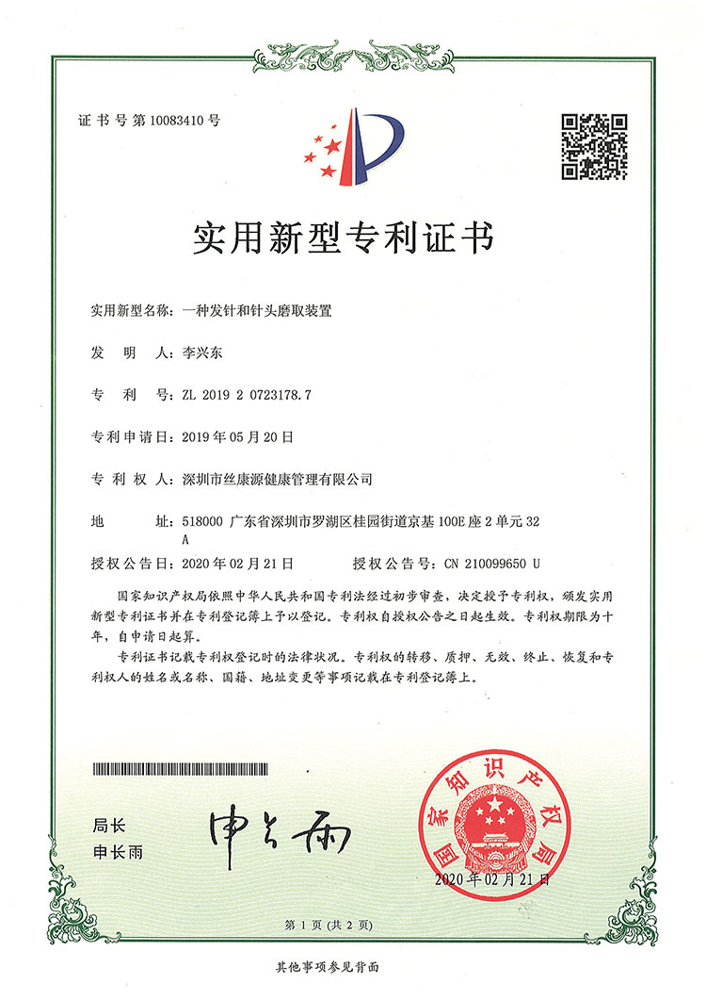
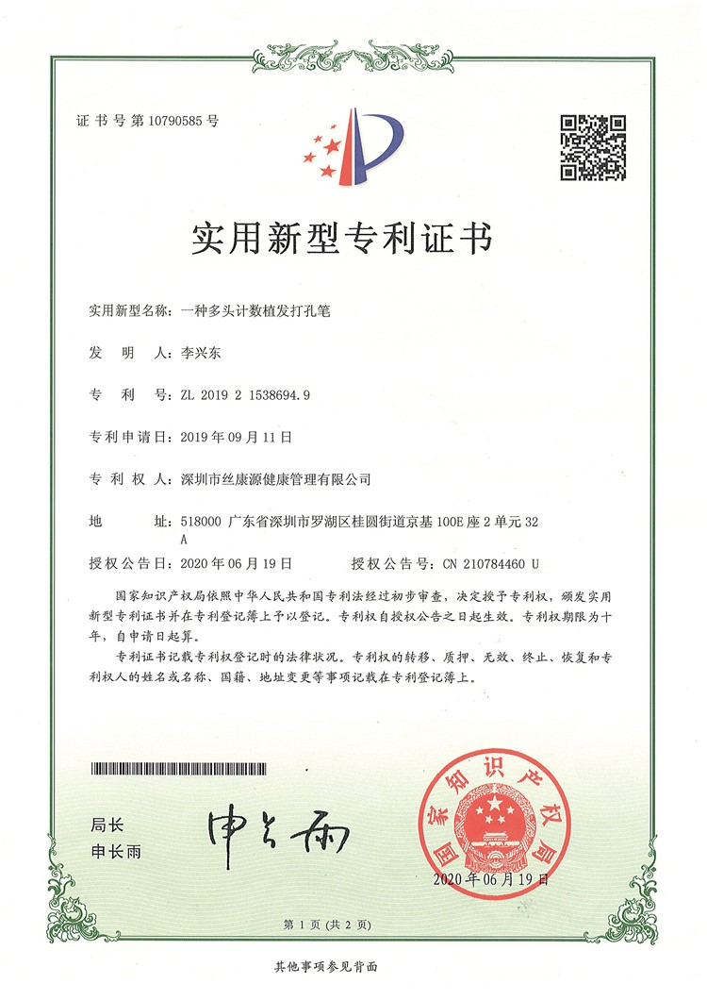
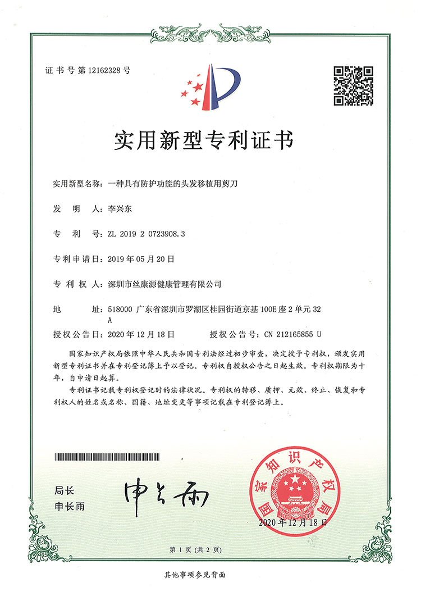
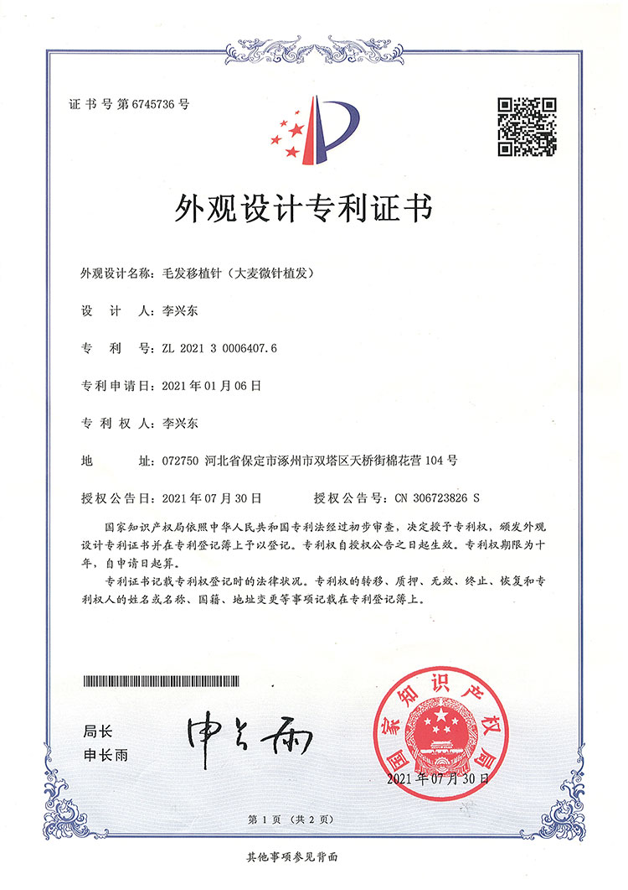
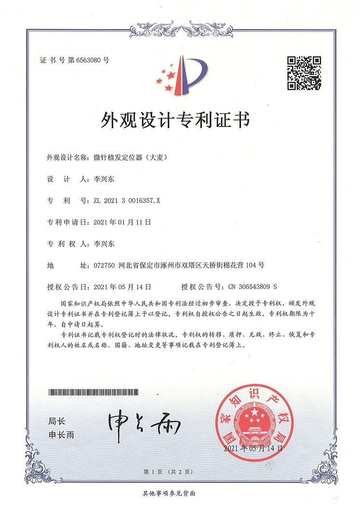

Patented Technologies
With more than 10 patents, actively researching and continuously innovating hair microneedle technology

2014
Extraction Device for ST Autologous Living Cell Hair Transplant Technology
Patent No.: ZL201420406032.7

2014
Automatic Prescription Drug Vending Machine System and Control Method
Patent No.: ZL201410701196.7

2019
Scalp Expansion Fixation Device for Follicle Extraction
Patent No.: ZL201920440628.1

2019
Beard Harvesting Device
Patent No.: ZL201920723160.7

2019
Forceps for Hair Transplant
Patent No.: ZL201920723906.4

2019
Hair Needle and Needle Tip Grinding Device
Patent No.: ZL201920723178.7

2019
Multi-Head Counting Hair Transplant Punch Pen
Patent No.: ZL201921538694.9

2019
Hair Transplant Scissors with Protective Function
Patent No.: ZL201920723908.3

2020
Hair Transplant Device for Hair Transplant Surgery
Patent No.: ZL202021868210.x

2021
Hair Transplant Needle
Patent No.: ZL202130006407.6

2021
Microneedle Hair Transplant Positioner
Patent No.: ZL202130016357.X

2021
Microneedle Transplant Device for Hair Transplant Surgery
Patent No.: ZL202122824734.X

2021
Follicle Implant Pen for Microneedle Hair Transplant
Patent No.: ZL202122824714.2

2021
Follicle Tissue Composite Preservation Solution, Preparation Method, and Maintenance...
Patent No.: ZL202111116679.7